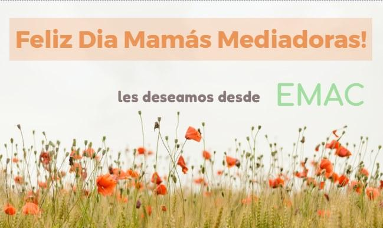
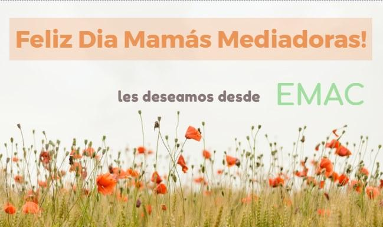

Feliz dia de la Madre



Portillo Bernardita Maria Julieta C/ Urquiza Justo Manuel Y Otros S/ Daños Y Perjuicios (99)- EXP. Nº 29489 - JUZG. CIV. 4 ZARATE CAMPANA. - 06/10/2021
(si se esta logueado en la MEV, puede verse el fallo completo en este link: https://mev.scba.gov.ar/proveido.asp?pidJuzgado=GAM1581&sCodi=261057&nPosi=6020484&sFile=a&MT=)
"Atento lo solicitado, y lo resuelto por la Cámara de Apelaciones Departamental en casos análogos, corresponde que el suscripto efectúe un prorrateo de los honorarios regulados a los efectos de que los mismos no superen el tope que debe afrontar el vencido del 25% previsto en el art. 730 del CCCN, incluyendo dentro de ese porcentaje la tasa de Justicia y demás costas.
Déjase constancia que no resulta procedente incluir los honorarios correspondientes al mediador interviniente a los efectos del prorrateo, pues el art. 730 CCC refiere expresamente su aplicación a honorarios "en primera y única instancia", circunstancia que obsta de introducir los propios del ámbito de una actuación en etapa prejudicial, teniendo en cuenta que la mediación constituye un modo alternativo para la solución de conflictos al que las partes deben someterse obligatoriamente como condición previa para habilitar el proceso judicial. Los honorarios de los mediadores, aunque sometidos a la espera de la sentencia condenatoria en costas, se encuentran determinados por fuera del proceso judicial en los términos de la Ley 13.951 e importan un derecho adquirido, que no es claro que participe del supuesto contemplado en aquella norma (art. 730 CCC).
Por ello, dispongo excluir los honorarios del mediador del cálculo del prorrateo; en consecuencia los honorarios del mediador serán los fijados más arriba, pero también aclaro el cobro de sus estipendios -si no le son satisfechos en tiempo y forma- deberá perseguirlos por separado -no se podrá valer de los depósitos existentes en autos- atento que los fondos depositados están para atender en primer lugar las obligaciones del proceso y sólo puede entenderse la exclusión del prorrateo considerando que se trata de honorarios que no forman parte del juicio."
El fallo, si bien morigera los honorarios que hubieran correspondido por aplicacion del decreto 2530/10, no se aparta tanto de la escala actual. Y excluye expresamente nuestros estipendios del prorrateo.
Nuevo valor del ius $3267 - Vigente a partir de Octubre de 2021

Nuevo valor del ius: $ 3092


Queridos colegas:
Tenemos el agrado de invitarlos a participar del VIII Encuentro de Mediadores, a celebrarse los días 17, 18 y 19 de diciembre de 2020, sobre la temática de “Mediación y Acceso a Justicia como política pública”.
Este espacio nació en el 2012 con el primer encuentro en Santa Teresita, y es un ámbito generado por y para mediadores en el cual nos reunimos para debatir entre todos, compartir experiencias y generar propuestas para afrontar dificultades y que aporten al crecimiento de la mediación.
Por ello, la principal modalidad de trabajo de estos encuentro es el trabajo en comisiones, donde todos los participantes podemos aportar nuestro conocimiento y vivencias en busca de propuestas superadoras, culminando con la elaboración de un documento que las recepte y se de a publicidad en todos nuestros ámbitos de trabajo
Las comisiones donde se puede participar son: 1) .Campos de acción y materias mediables, 2) Honorarios y el contexto judicial y 3) Mediación a distancia. También contaremos con mesas de diálogo con invitados especiales.
Aprovechando la posibilidad que nos da esta virtualidad impuesta, de reunirnos sin tener que movilizarnos físicamente, los esperamos en este espacio de dialogo y participación
Saludos a todos y esperamos poder encontrarnos pronto!